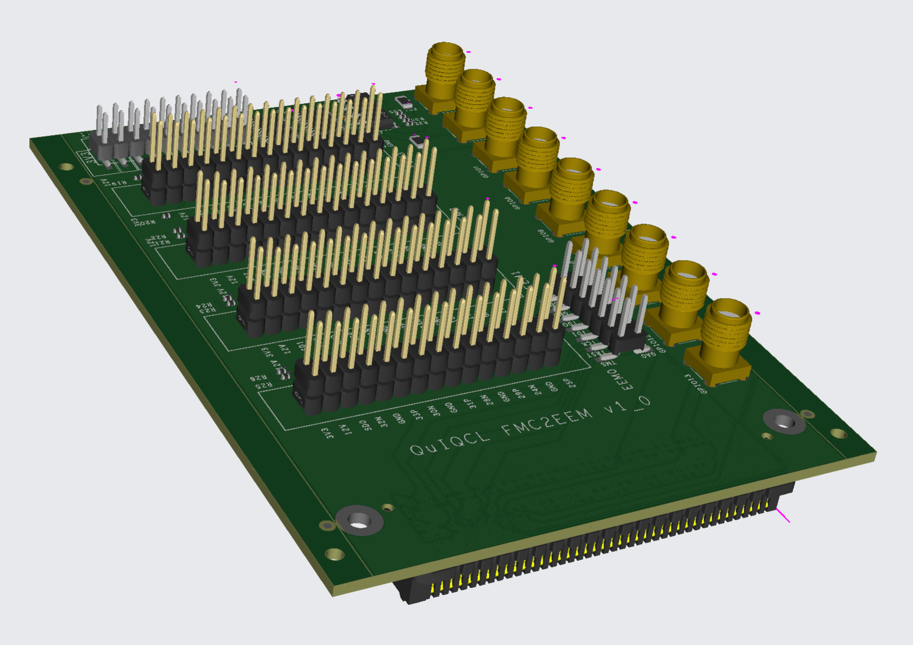

RTL/Firmware Project
LowLatENCy (LOLENC) Quantum Computer Control System based on RFSoC

Full arbitrary waveform generator which is C programmable on field with TCP

Programming Procedure


DDS Strcuture

AXI Deadlock prevention structure
Memory Controller
Rabi Data
Remote Ion Entanglement Experiment
Remote ion entanglement experiment
AD9910 Control Module
The AD9910 control module handles signal generation for quantum experiments with precision timing.
Image Processing in FPGA for Photonic Machine Learning

Image display system with DVI/HDMI for SLM.

ZCU104 Display System

ZCU104 Interrupt System
Python Project
Vivado Project Manager

Generate custom IP and connect block diagram automatically based on json meta file
LOLENC Master Server
Lolenc control python server
Ion Trap Two Qubit Gate Pulse Shaping Optimization

Pulse shaping optimization through ADAM algorithm and analysis between experiment data and calculated data
PCB Project
FMC to EEM PCB board
Daughter board which converts FMC(VITA57.1/4) to EEM. Differential signal with 1Gbps.
EEM to TTL PCB board

Daughter board converting LVTTL-LVDS signal. 50-Ohm termination is configurable.
PMOD to SMA PCB board
50-Ohm impedance, and delay matched PCB board used in ion entanglement experiment.
PMOD to AD9910 PCB board

PCB connecting ArtyS7 FPGA to AD9910 DDS board
Balun PCB board

PCB converting differential anaglog signal to single ended analog signal which is 100-Ohm, 50-Ohm impedance matched respectively.

To verify whether resistor termination is unnecessary on the balun input port, we extracted the IBIS model of the balun component and the IPC2581 file from the OrCAD PCB design and confirmed this through simulations using ANSYS SIwave.